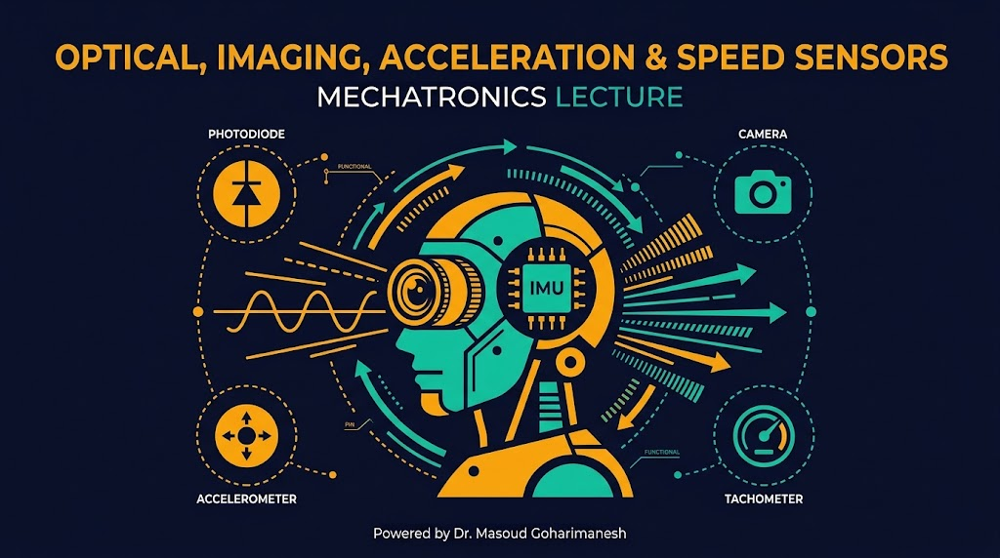
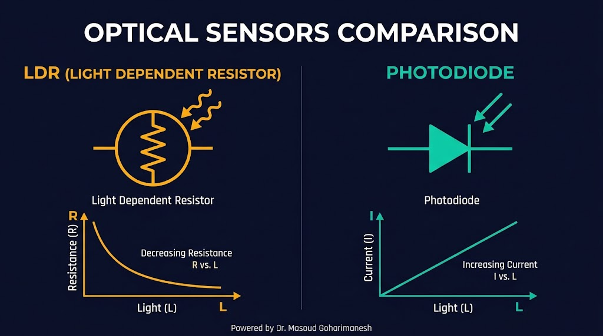
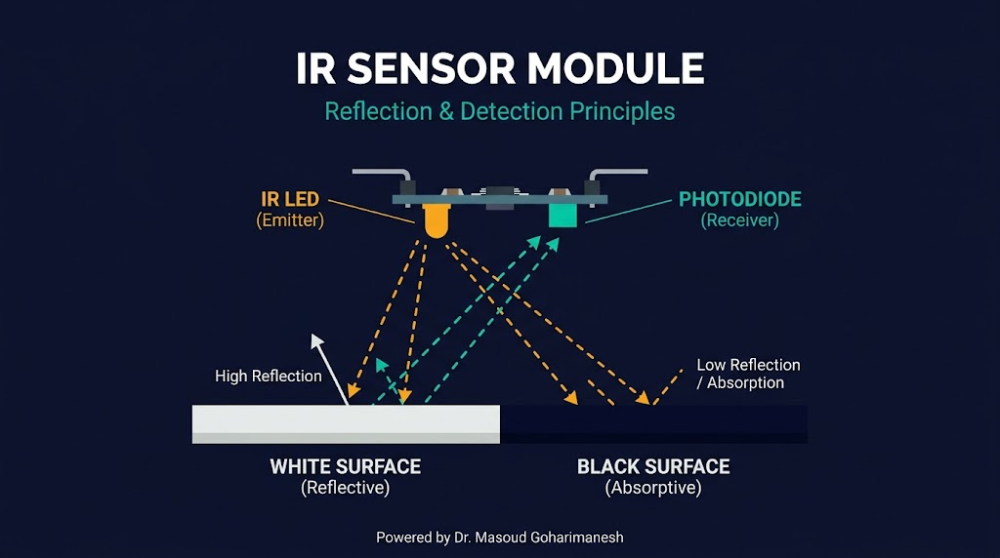
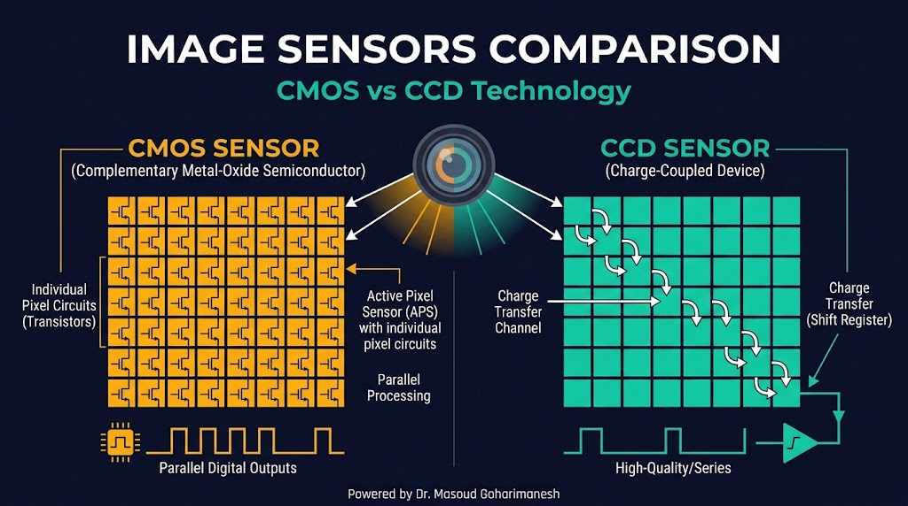
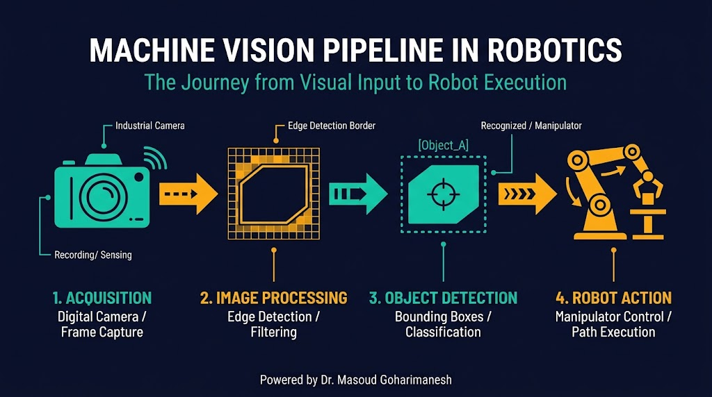
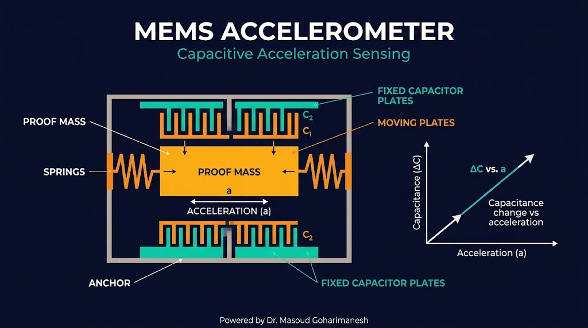
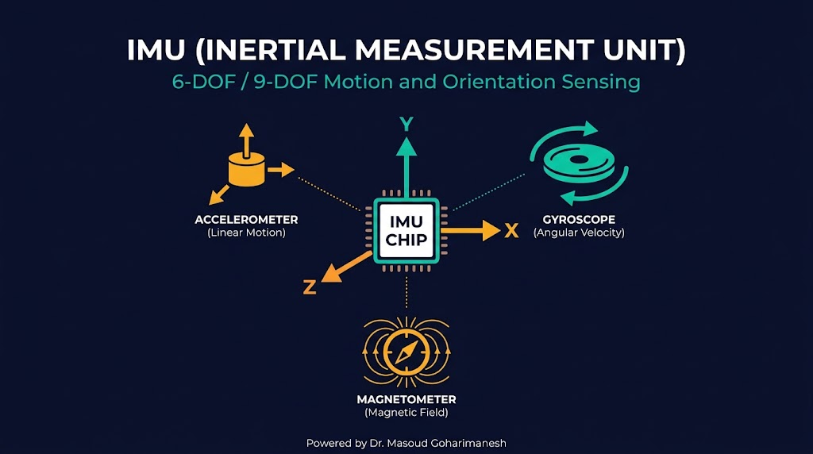
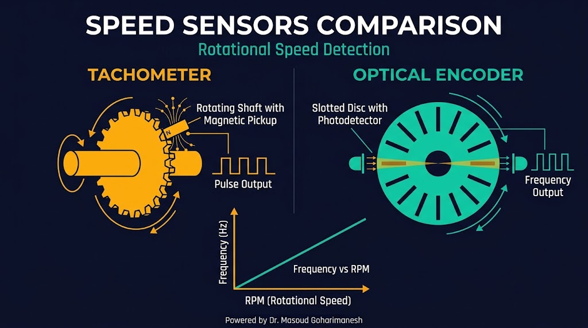

بخش دوم: نوری، تصویری، شتاب و سرعت
دکتر مسعود گوهریمنش
دانشیار گروه مهندسی مکانیک
دانشگاه تربت حیدریه | پاییز ۱۴۰۵
یک ربات خودران، در هر ثانیه میلیونها بایت داده از سنسورها دریافت میکند!
چگونه میتوان از نور، تصویر، شتاب و سرعت برای درک بهتر محیط اطراف ربات استفاده کرد؟
تبدیل نور به سیگنال الکتریکی
مقاومت وابسته به نور — ارزان، ساده، پاسخ کند
تولید جریان با نور — سریع، خطی، پرکاربرد
تقویت داخلی جریان نوری — حساسیت بالا
UV (فرابنفش): ۱۰-۴۰۰ نانومتر | Visible (مرئی): ۴۰۰-۷۰۰ نانومتر | IR (مادون قرمز): ۷۰۰ نانومتر - ۱ میلیمتر
دو سنسور نوری پرکاربرد

پرکاربردترین سنسور در رباتیک

یک LED مادون قرمز نور منتشر میکند. اگر جسمی در مسیر باشد، نور بازتاب شده و توسط فوتودیود دریافت میشود. مقدار نور بازتابی به رنگ و فاصله جسم بستگی دارد.
دوربین و سنسورهای CMOS/CCD

از تصویر خام تا تصمیم ربات

کاربرد در پروژههای درسی: ربات مرتبسازی بر اساس رنگ، ربات تشخیص چهره، ربات مسیریاب با دوربین
اندازهگیری شتاب خطی و زاویه
تولید بار در اثر شتاب — پاسخ سریع، مناسب ضربه
تغییر ظرفیت با حرکت جرم — دقیق، ارزان، پرکاربرد
تغییر انتقال حرارت با شتاب — ساده، کمدقت
محدوده: ±2g تا ±16g | رزولوشن: ۸ تا ۱۶ بیت | نرخ نمونهبرداری: تا ۱۰۰۰ هرتز
تکنولوژی ساخت میکروالکترومکانیکی

یک جرم کوچک (Proof Mass) توسط فنرهای میکروسکوپی معلق است. با اعمال شتاب، جرم جابجا میشود و فاصله بین صفحات خازنی تغییر میکند. این تغییر ظرفیت به ولتاژ تبدیل و دیجیتال میشود.
واحد اندازهگیری اینرسی

اندازهگیری سرعت زاویهای حول سه محور. واحد: درجه بر ثانیه (°/s)
اندازهگیری میدان مغناطیسی زمین. برای تعیین جهت (Heading)
ترکیب ۳ شتابسنج + ۳ ژیروسکوپ + ۳ مگنتومتر = ۹ درجه آزادی. نمونه: MPU9250, BNO055
اندازهگیری سرعت خطی و زاویهای

ترکیب سنسورها برای ناوبری دقیق
نکته کلیدی: هیچ سنسوری بهتنهایی کامل نیست. ترکیب دادههای چند سنسور (Sensor Fusion) دقت و قابلیت اطمینان ناوبری را بهشدت افزایش میدهد.
ربات تعقیب خط با آرایه سنسور IR
موقعیت ربات را تغییر دهید تا منطق تعقیب خط را مشاهده کنید.
جلسه چهارم - سنسورها و ترانسدیوسرها (بخش دوم)
نکات کلیدی جلسه چهارم
جلسه بعد: پردازش سیگنالهای سنسوری (فیلتر، تقویت، ADC)
Powered by Dr. Masoud Goharimanesh
پردازش سیگنالهای سنسوری
مطالعه پیش از جلسه: فصل ۵ منابع درسی
Powered by Dr. Masoud Goharimanesh